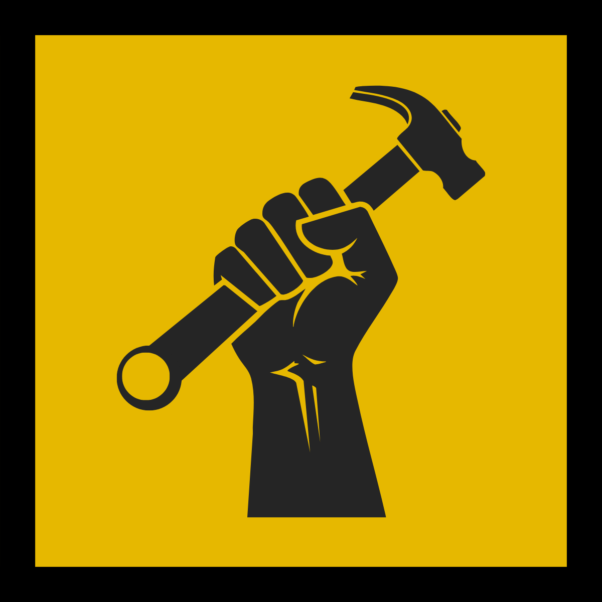

Communiqués et prises de position
Suivez ici les déclarations officielles, les annonces et les prises de position du parti.
Le premier communiqué du PRQ s'en vient. Revenez bientôt, ou consultez le programme du parti en attendant.